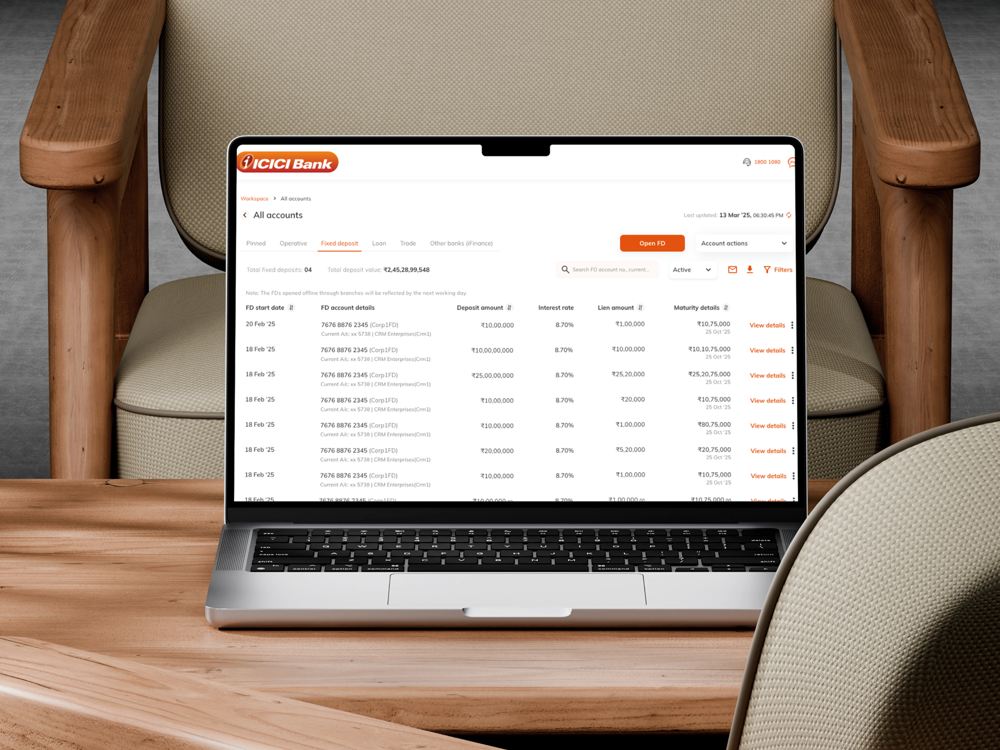
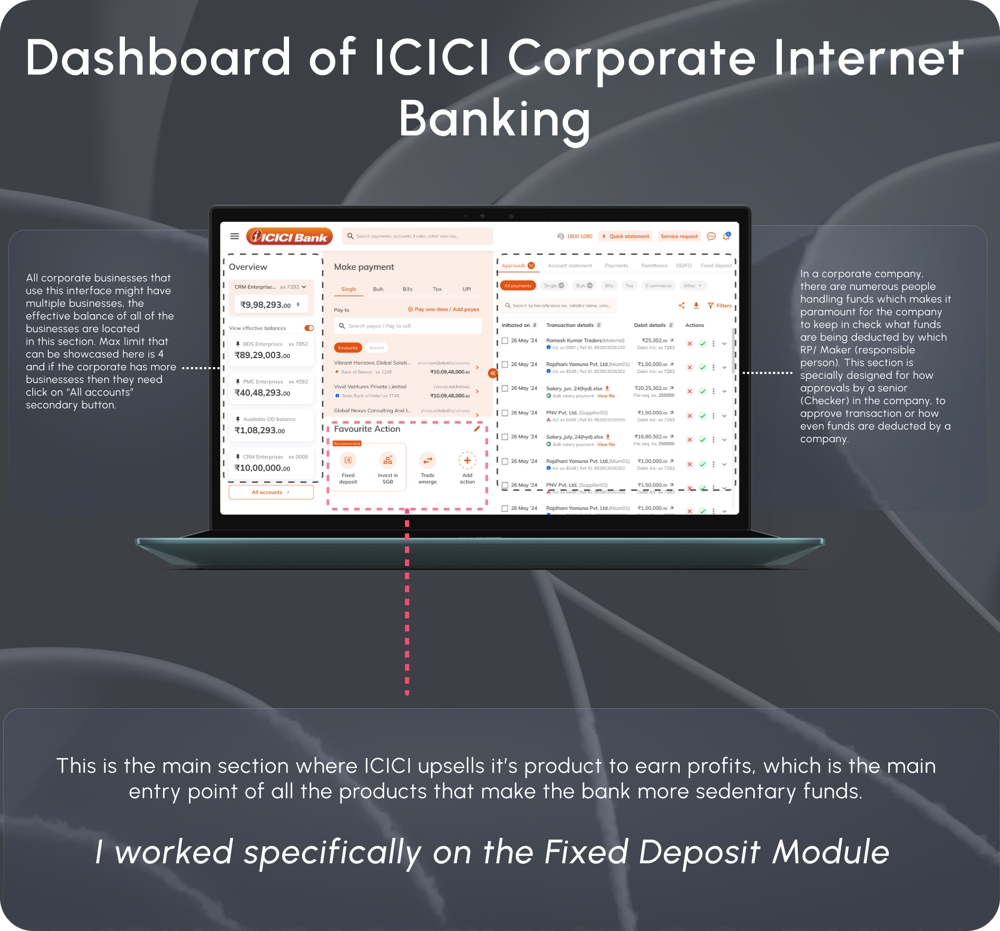

ICICI
CIB
Corporate Internet Banking SAAS

Project
Overview
Corporate Internet Banking (CIB) is a specialized online banking platform tailored for businesses, organizations, and institutions (non-individual customers)
It enables companies—from small enterprises to large corporations—to access, manage, and transact on their business accounts securely over the internet, 24/7
Supports initiator–approver workflows (one user initiates, another approves payments), audit trails, role-based access, 2-factor authentication, and transaction limits for robust security.
Difference between Corporate & Retail Internet Banking
Corporate Internet Banking
001 Commercial firms for business purposes
002 Employees share the same account ID and password
003 Transactions require approval workflows to keep corporate funds in check
Retail Internet Banking
001 Individuals for regular, day-to-day transactions
002 Every customer has a different ID and password
003 Does not need any approval as only a single individual tracks their funds

ICICI Corporate Internet Banking (CIB)
Designing high-stakes financial workflows for enterprise users
Improved clarity and decision-making across Fixed Deposit (FD) creation, approval, and closure flows in a complex multi-user banking system.
Key Modules &
Impact
Worked across multiple high-stakes financial workflows within ICICI Corporate Internet Banking (CIB), focusing on improving clarity, efficiency, and business outcomes.
Fixed Deposit (FD) Creation — Maker Flow
Designed a structured, step-by-step flow to reduce ambiguity and prevent high-value input errors, improving clarity in transaction initiation.
FD Approval — Maker–Checker / Checker Flow
Simplified multi-user approval workflows by clearly defining task ownership and status visibility, enabling faster and more confident decision-making.
FD Closure — Maker Flow
Redesigned closure journeys to reduce friction and guide users through critical financial decisions with better clarity and control.
FD Closure Approval — Multi-role Flow
Improved approval visibility and reduced confusion in closure workflows across different user roles.
Cross-Sell: Overdraft (OD) against FD
Introduced a decision layer during FD closure to offer OD as an alternative, enabling banks to retain funds and support revenue growth.
OD Journey (RBI-Compliant Design)
Iterated 13+ times to design a compliant OD experience aligned with RBI guidelines, balancing regulatory constraints with usability.
Process
A structured, stepped approach to bring clarity to the Corporate Internet Banking ecosystem.
Discovery
We begin by uncovering the core business needs, conducting thorough user research, and establishing a robust design system to define the visual blueprint.
Research - Branding - Design System
Design
Translating findings into tangible interfaces. We formulate user journeys, architect the information structure, and craft high-fidelity website designs.
User Experience - UI / IA
Delivery
Finalizing the solution and handing it over to the development team, while incorporating active feedback for rolling iterations.
Delivery To ICICI Team
Context of Fixed Deposits in CIB
Before just showcasing just the designs let's give you more context on how fixed deposit are actually transacted for corporate business and how banks offer that

What happens when someone clicks on "Fixed deposit"?
Does user flow of Open FD gets triggered?
But then where will the data of past FDs be visible?
"We need to start the journey with the dashboard of Fixed Deposit, where there will be collated data of all past Fixed Deposit, this dashboard will trigger all other journeys."

Krishan Gupta
User Experience design lead,
Them Consulting
User
Personas